특수용접기능사 (2008-10-05 기출문제)
1과목: 용접일반
1. 야금적 접합법의 종류에 속하는 것은?
- 납땜 이음
- 볼트 이음
- 코터 이음
- 리벳 이음
(정답률: 85%)

2. 교류 아크용접기는 무부하 전압이 높아 전격의 위험 이 있으므로 안전을 위하여 전격방지기를 설치한다. 이때 전격방지기의 2차 무부하 전압은 몇 V 이하로 하는 것이 적당한가?
- 80V~90V
- 60V~70V
- 40V~50V
- 20V~30V
(정답률: 74%)
3. 일반 피복금속아크 용접에서 용접봉의 용융 속도와 관계가 있는 것은?
- 용접 속도
- 아크 길이
- 아크 전류
- 용접봉 길이
(정답률: 73%)
4. 주철이나 비철금속은 가스절단이 용이하지 않으므로 철 분 또는 용제를 연속적으로 절단용 산소에 공급하여 그 산화열 또는 용제의 화학작용을 이용한 절단 방법은?
- 분말절단
- 산소창절단
- 탄소아크절단
- 스카핑
(정답률: 65%)
5. 청색의 겉불꽃에 둘러싸인 무광의 불꽃이미로 육안으로는 불꽃 조절이 어렵고, 납땜이나 수중 절단의 예열 불꽃으로 사용되는 것은?
- 천연가스 불꽃
- 산소-수소 불꽃
- 도시가스 불꽃
- 산소-아세틸렌 불꽃
(정답률: 91%)
6. 고속분출을 얻는 데 적합하고 보통의 팁에 비하여 산소의 소비량이 같을 때, 절단 속도를 20~25% 증가시킬 수 있는 절단 팁은?
- 다이버젼트형 팁
- 직선형 팁
- 산소-LP용 팁
- 보통형 팁
(정답률: 79%)
7. 피복금속 아크 용접에서 아크 안정제에 속하는 피복제는?
- 산화티탄
- 탄산마그네슘
- 페로망간
- 알루미늄
(정답률: 64%)
8. 직류발전형 아크 용접기의 특징을 올바르게 나타낸 것은?
- 완전한 직류 전원을 얻는다.
- 직류를 얻는데 소음이 없다.
- 고장이 비교적 적다.
- 보수와 점검이 용이하다.
(정답률: 64%)
9. 용접기의 구비조건으로 잘못 설명된 것은?
- 구조 및 취급이 간단해야 한다.
- 전류조정이 용이하고 일정하게 전류가 흘러야 한다.
- 아크발생 및 유지가 용이하고 아크가 안정되어야 한다.
- 사용 중에 온도 상승이 커야 한다.
(정답률: 92%)
10. 가스용접봉 표시 GA46에서 46의 의미는?
- 용접봉의 재질
- 용접봉의 규격
- 용접봉의 종류
- 용착금속의 최소 인장강도
(정답률: 87%)
11. 용접용 산소용기 취급상의 주의 사항 중 틀린 것은?
- 용기 운반시 충격을 주어서는 안 된다.
- 통풍이 잘되고 직사광선이 잘 드는 곳에 보관한다.
- 밸브의 개폐는 조용히 해야 한다.
- 가연성 물질이 있는 곳에는 용기를 보관하지 말아야 한다.
(정답률: 86%)
12. 가스절단 장치에 관한 설명으로 틀린 것은?
- 프랑스식 절단 토치의 팁은 동심형이다.
- 중압식 절단 토치는 아세틸렌가스 압력이 보통 0.07kgf/㎠이하에서 사용된다.
- 독일식 절단 토치의 팁은 이심형이다.
- 산소나 아세틸렌 용기 내의 압력이 고압이므로 그 조정을 위해 압력 조정기가 필요하다.
(정답률: 77%)
13. 피복아크 용접봉 중 고산화티탄계를 나타내는 용접봉은?
- E4301
- E4311
- E4313
- E4316
(정답률: 77%)
14. 기계적 이음과 비교한 용접 이음의 장점으로 틀린 것은?
- 기밀성이 우수하다.
- 재료의 변형이 없다.
- 이음 효율이 높다.
- 재료두께의 제한이 없다.
(정답률: 72%)
15. 35℃에서 120kgf/cm2으로 압축하여 충전한 용기속의 산소량이 5604 리터라면 내부 용적은 몇 리터로 계산되는가?
- 0.02
- 58.84
- 67.25
- 46.7
(정답률: 62%)
16. 가스 가우징에 의한 홈 가공을 할 때 가장 적당한 홈의 깊이에 대한 나비의 비는 얼마인가?
- 1 : (2~3)
- 1 : (5~7)
- (2~3) : 1
- (5~7) : 1
(정답률: 58%)
17. 가스 용접에서 전진법과 비교한 후진법의 특징 설명으로 옳은 것은?
- 용접속도가 느리다.
- 홈 각도가 크다.
- 용접가능 판 두께가 두껍다.
- 용접변형이 크다.
(정답률: 74%)
18. 설퍼 프린트시 강판에 황(S)이 많은 곳의 인화지 색깔은 어떻게 변하는가?
- 흑색으로
- 청색으로
- 적색으로
- 녹색으로
(정답률: 45%)
19. 합금 주철의 합금 원소들 중에서 흑연화를 촉진시키는 원소는?
- Cr
- Mo
- V
- Ni
(정답률: 33%)
20. 탄소강의 담금질 중 고온의 오스테나이트 영역에서 소재를 냉각하면 냉각 속도의 차에 따라 마텐자이트, 트루스타이트 솔바이트, 오스테나이트 등의 조직으로 변태 되는데 이들 조직 중에서 강도와 경도가 가장 높은 것은?
- 마텐자이트
- 트루스타이트
- 솔바이트
- 오스테나이트
(정답률: 66%)
21. 합금 공구강에 첨가하는 원소로서 담금질 효과를 증대시키는 원소는?
- Pt
- Cr
- Al
- Zr
(정답률: 67%)
22. 마그네슘의 성질에 대한 설명 중 잘못된 것은?
- 비중은 1.74이다.
- 비강도가 Al(알루미늄)합금보다 우수하다.
- 면심입방 격자이며, 냉간가공이 가능하다.
- 구상흑연 주철의 첨가제로 사용한다.
(정답률: 42%)
23. 주성분은 Al-Si-Cu-Mg-Ni로 열팽창 계수 및 비중이 작고 내마멸성이 커 피스톤용으로 사용되는 내열용 알루미늄 합금은?
- 실루민
- Lo-Ex합금
- 하이드로날륨
- 라우탈
(정답률: 45%)
24. 스테인리스강 중 내식성이 가장 높고 비자성체인 것은?
- 마텐자이트계
- 페라이트계
- 펄라이트계
- 오스테나이트계
(정답률: 63%)
25. 강자성체만으로 구성된 것은?
- 철 - 니켈 - 코발트
- 금 - 구리 - 철
- 철 - 구리 망간
- 백금 - 금 - 알루미늄
(정답률: 72%)
26. 하드필드강은 어느 주강에 해당 되는가?
- 망간(Mn) 주강
- 크롬(Cr) 주강
- 니켈(Ni) 주강
- 니켈(Ni)-크롬(Cr) 주강
(정답률: 41%)
27. 철강 표면에 Al을 침투시키는 금속 침투법은?
- 세라라이징
- 칼로라이징
- 실리코나이징
- 크로마이징
(정답률: 62%)
28. 모넬메탈(Monel metal)의 종류 중 유황(S)을 넣어 강도는 희생시키고 쾌삭성을 개선한 것은?
- KR - Monel
- K - Monel
- R - Monel
- H - Monel
(정답률: 36%)
29. 용접할 때 발생한 변형을 교정하는 방법 중 틀린 것은?
- 형재(形材)에 대한 직선 수축법
- 박판에 대한 점 수축법
- 박판에 대하여 가열 후 압력을 가하고 공냉하는 방법
- 롤러에 거는 방법
(정답률: 55%)
30. 서브머지드 아크 용접의 특징 설명으로 틀린 것은?
- 개선각을 작게 하여 용접 패스 수를 줄일 수 있다.
- 용접 중 아크가 안 보이므로 용접부의 확인이 곤란하다.
- 용접선이 구부러지거나 짧아도 능률적이다.
- 용접설비비가 고가이다.
(정답률: 78%)
31. CO2가스아크 용접에서 용극식의 솔리드와이어 혼합가스법으로 맞는 것은?
- CO2＋C 법
- CO2＋CO＋Ar 법
- CO2＋CO＋O2 법
- CO2＋Ar 법
(정답률: 58%)
32. 전기용접기를 설치해도 되는 장소는?
- 먼지가 매우 많고 옥외의 비바람이 치는 곳
- 수증기 또는 습도가 높은 곳
- 폭발성 가스가 존재하지 않는 곳
- 진동이나 충격을 받는 곳
(정답률: 90%)
33. 이산화탄소(CO2)가스 아크 용접용 와이어 중 탈산제, 아크 안정제 등 합금원소가 포함되어 있어 양호한 용착금속을 얻을 수 있으며, 아크도 안정되어 스패터가 적고 비드 외관도 아름다운 것은?
- 혼합 솔리드 와이어
- 복합 와이어
- 솔리드 와이어
- 특수 와이어
(정답률: 50%)
34. 초음파 탐상법에 속하지 않는 것은?
- 투과법
- 펄스반사법
- 공진법
- 맥동법
(정답률: 70%)
35. 저온균열이 일어나기 쉬운 재료에 용접 전에 균열을 방지할 목적으로 피용접물의 전체 또는 이음부 부근의 온도를 올리는 것을 무엇이라고 하는가?
- 잠열
- 예열
- 후열
- 발열
(정답률: 90%)
2과목: 용접재료
36. 불활성가스 텅스텐 아크 용접의 직류정극성에 관한 설명이 맞는 것은?
- 직류 역극성보다 청정작용의 효과가 가장 크다.
- 직류 역극성보다 용입이 깊다.
- 직류 역극성보다 비드폭이 넓다.
- 직류 역극성에 비하여 지름이 큰 전극이 필요하다.
(정답률: 72%)
37. 점 용접의 종류가 아닌 것은?
- 맥동 점용접
- 인터랙 점용접
- 직렬식 점용접
- 원판식 점용접
(정답률: 59%)
38. 서브머지드 아크 용접기에서 다전극 방식에 의한 분류에 속하지 않는 것은?
- 푸시 풀식
- 텐덤식
- 횡병렬식
- 횡직렬식
(정답률: 64%)
39. 필릿용접의 경우 루트 간격의 양에 다라 보수 방법이 다른데 간각이 4.5㎜이상일 때 보수하는 방법으로 옳은 것은 무엇인가?
- 각장(목길이) 대료 용접한다.
- 각장(목길이)을 증가시킬 필요가 있다.
- 루트 간격대로 용접한다.
- 라이너를 넣는다.
(정답률: 56%)
40. 용접부 외부에서 주어지는 열량을 용접입열이라 한다. 용접입열이 충분하지 못하여 발생하는 결함은?
- 용융 불량
- 언더컷
- 균열
- 변형
(정답률: 70%)
41. 용접작업에서 안전에 대해 설명한 것 중 틀린 것은?
- 높은 곳에서 용접 작업할 경우 추락, 낙하 등의 위험이 있으므로 항상 안전벨트와 안전모를 착용한다.
- 용접 작업 중에 여러 가지 유해 가스가 발생하기 때문에 통풍 또는 환기 장치가 필요하다.
- 가연성의 분진, 화약류 등 위험물이 있는 곳에서는 용접을 해서는 안 된다.
- 가스 용접은 강한 빛이 나오지 않기 때문에 보안경을 착용하지 않아도 된다.
(정답률: 89%)
42. 안전모의 착용에 대한 설명으로 틀린 것은?
- 턱조리개는 반드시 조이도록 할 것
- 작업에 적합한 안전모를 사용할 것
- 안전모는 작업자 공용으로 사용할 것
- 머리상부와 안전모 내부의 상단과의 간격은 25㎜ 이상 유지하도록 조절하여 쓸 것
(정답률: 81%)
43. 산화하기 쉬운 알루미늄을 용접할 경우에 가장 적당한 용접법은?
- 서브머지드 아크용접
- 불활성가스 아크용접
- CO2 아크용접
- 전기저항 용접
(정답률: 58%)
44. 연납땜의 대표적인 것으로 흡착작용은 무엇의 함유량에 의해 좌우되는가?
- 주석
- 아연
- 송진
- 붕사
(정답률: 45%)
45. 파장이 같은 빛을 렌즈로 집광하면 매우 작은 점으로 집중이 가능하고 높은 에너지로 집속하면 높은 열을 얻을 수 있다. 이것을 열원으로 하여 용접하는 방법은?
- 레이저 용접
- 일렉트로 슬래그 용접
- 테르밋 용접
- 플라즈마 아크 용접
(정답률: 82%)
46. 용접할 때 발생하는 변형과 잔류응력을 경감하는데 사용되는 방법 중 틀린 것은?
- 용접 전 변형 방지책으로는 억제법, 역 변형법을 쓴다.
- 모재의 열전도를 억제하여 변형을 방지하는 방법으로는 전진법을 쓴다.
- 용접 금속부의 변형과 응력을 경감하는 방법으로는 피닝법을 쓴다.
- 용접 시공에 의한 경감법으로는 대칭법, 후진법, 스킵법 등을 쓴다.
(정답률: 70%)
47. 용접부 검사법 중 기계적 시험법이 아닌 것은?
- 굽힘 시험
- 경도 시험
- 인장 시험
- 부식 시험
(정답률: 87%)
48. 다음 보기와 같은 용착법은?
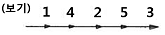
- 대칭법
- 전진법
- 후진법
- 비석법
(정답률: 66%)
49. 용접작업에서 아르곤(Ar) 용기를 나타내는 색깔은?
- 황색
- 녹색
- 회색
- 흰색
(정답률: 75%)
50. 가스 절단기 및 토치의 취급상 주의 사항으로 틀린 것은?
- 가스가 분출되는 상태로 토치를 방치하지 않는다.
- 토치의 작동이 불량할 때는 분해허여 기름을 발라야 한다.
- 점화가 불량할 때에는 고장을 수리 점검한 후 사용한다.
- 조정용 나사를 너무 세게 조이지 않는다.
(정답률: 88%)
3과목: 기계제도
51. 구의 반지름을 나타내는 치수 보조 기호는?
- S∅.
- R
- SR
- ∅
(정답률: 58%)
52. 기계구조용 탄소 강관의 KS 재료 기호는?
- SPC
- SPS
- SWP
- STKM
(정답률: 41%)
53. 실물을 보고 프리핸드로 그린 도면으로 필요한 사항을 기입하여 완성한 도면인 것은?
- 스케치도
- 상세도
- 부분조립도
- 트레이스도
(정답률: 86%)
54. 보기와 같은 3각법으로 정투상한 정면도와 우측면도에 가장 적합한 평면도는?
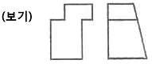
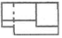
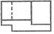
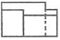
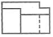
(정답률: 46%)
55. 도면에 리벳의 호칭이 “KS B 1102 보일러용 둥근 머리리벳 13×30 SV 400" 로 표시된 경우 올바른 해독은?
- 리벳의 수량 13개
- 리벳의 길이 30㎜
- 최대 인장강도 400kPa
- 리벳의 호칭 지름 30㎜
(정답률: 40%)
56. 기계제도에서 사용하는 파단선의 설명으로 올바른 것은?
- 가는 1점 쇄선이다.
- 불규칙한 파형의 가는 실선이다.
- 굵기는 외형선과 같다.
- 아주 굵은 실선으로 그린다.
(정답률: 51%)
57. 한쪽단면(반단면) 표시법에 대한 설명으로 올바른 것은?
- 대칭형의 물체를 중심선을 경계로 하여 외형도의 절반과 단면도의 절반을 조합하여 표시한 것이다.
- 부품도의 중앙 부위 전후를 절단하여, 단면을 90° 회전시켜 표시한 것이다.
- 도형 전체가 단면으로 표시된 것이다.
- 물체의 필요한 부분만 단면으로 표시한 것이다.
(정답률: 53%)
58. 공작물을 1:5의 척도로 그리려고 하는데 실제길이 는 50㎜ 이다. 도면에 공작물의 길이를 얼마의 크기로 그려야 하는가?
- 10㎜
- 25㎜
- 50㎜
- 100㎜
(정답률: 66%)
59. 보기 입체도에서 화살표 방향을 정면으로 제3각법으로 그린 정투상도는?
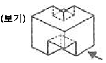
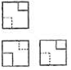
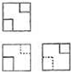
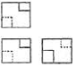
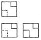
(정답률: 65%)
60. 보기와 같이 도시된 용접기호에서 해독으로 올바른 것은?
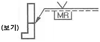
- 화살표 쪽은 방사선 시험이다.
- 화살표 반대쪽은 육안검사이다.
- 제거 가능한 덮개 판을 사용한다.
- 영구적인 덮개 판을 사용하여 용접한다.
(정답률: 67%)